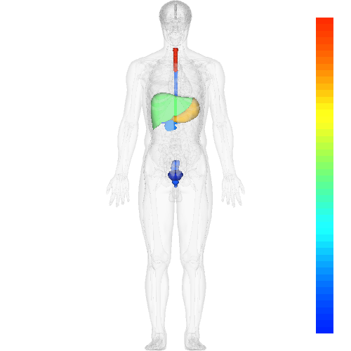

Anatomography Web API サンプルコード - Perl - Choropleth Map作成はじめに半透明の全身像および外部ファイルから読み込んだ臓器およびその値を反映した画像を生成します。 サンプルコード出力先ファイルは適宜変更して下さい。
#!/usr/bin/env perl
use strict;
use LWP::UserAgent;
# リクエスト先URL
my $serverURL = "http://lifesciencedb.jp/bp3d/API/";
# 描画リクエスト用のJSON文字列を作成
my $json = <<JSON;
{
"Common":{
"Model":"bp3d",
"Version":"2.0",
"TreeName":"partof",
"ColorbarFlag":true,
"ScalarColorFlag":true,
"ScalarMaximum":null,
"ScalarMinimum":null
},
"Part":[
{
"PartName":"human body",
"PartOpacity":0.1
}
JSON
# 外部ファイルを読み込んでパーツとして追加していきます
open LIST,"scalardata.txt";
while (<LIST>) {
my ($organ, $value) = split("\t", $_);
$json .= <<JSON;
,{
"PartName":"$organ",
"PartScalar":$value,
"ScalarColorFlag":true
}
JSON
}
close LIST;
$json .= <<JSON;
]
}
JSON
# 出力
open OUT, ">choropleth.png";
binmode(OUT);
print OUT &getImage($json); # 作成したJSONを利用して描画リクエスト
close OUT;
# 生成したJSONをパラメータとしてimageに対してGETリクエストするサブルーチン
sub getImage () {
my $json = shift;
my $userAgent = LWP::UserAgent->new;
my $request = HTTP::Request->new('GET', $serverURL."image?".$json);
my $response = $userAgent->request($request);
return $response->content;
}
外部ファイル（heatmap.txt）の内容 esophagus 9405 stomach 32851 rectum 8530 liver 23421 gallbladder 7476 pancreas 11933 trachea 43921 prostate 8840 urinary bladder 3817 出力画像  以下、各ステップに関する説明です。 共通項目の設定
my $json = <<JSON;
{
"Common":{
"Model":"bp3d",
"Version":"2.0",
"TreeName":"partof",
"ColorbarFlag":true,
"ScalarColorFlag":true,
"ScalarMaximum":null,
"ScalarMinimum":null
},
臓器モデルとして"bp3d"、バージョンとして"2.0"を指定しています。 "ScalarColorFlag"をtrueにすることで臓器に設定した値を描画色に反映することが可能です。 "ScalarMaximum"および"ScalarMinimum"にnullを指定することで、入力パーツの最大値を上限値、最小値を下限値とすることが可能です。 臓器値の読込と設定
# 外部ファイルを読み込んでパーツとして追加していきます open LIST,"heatmap.txt"; while ( 臓器名1 [タブ] 値1 臓器名2 [タブ] 値3 ・・・ 臓器名N [タブ] 値N という形式で記載されている情報を読み込み、JSONにパーツとして追加していきます。 |